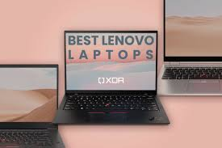
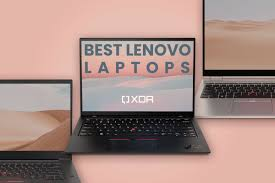

Lenovo Group Limited, trading as Lenovo (/ləˈnoʊvoʊ/ lə-NOH-voh, Chinese: 联想; pinyin: Liánxiǎng), is a Chinese-American[8] multinational technology company specializing in designing, manufacturing, and marketing consumer electronics, personal computers, software, business solutions, and related services.[5] Products manufactured by the company include desktop computers, laptops, tablet computers, smartphones, workstations, servers, supercomputers, data storage devices, IT management software, and smart televisions. Its best-known brands include its ThinkPad business line of laptop computers (acquired from IBM), the IdeaPad, Yoga, LOQ, and Legion consumer lines of laptop computers, and the IdeaCentre, LOQ, Legion, and ThinkCentre lines of desktop computers. As of 2024, Lenovo is the world's largest personal computer vendor by unit sales.[9]
Lenovo has operations in over 60 countries,[10] and sells its products in around 180 countries.[11] It was incorporated in Hong Kong,[2] with global headquarters in Beijing, and Morrisville, North Carolina, United States.[3][4] It has research centres in Beijing, Chengdu, Yamato (Kanagawa Prefecture, Japan), Singapore, Shanghai, Shenzhen, and Morrisville,[5] and also has Lenovo NEC Holdings, a joint venture with NEC that produces personal computers for the Japanese market.
History
1984–1993: Founding and early history
Lenovo was founded in Beijing on 1 November 1984 as Legend by a team of engineers led by Liu Chuanzhi and Danny Lui. Initially specializing in televisions, the company migrated towards manufacturing and marketing computers.
In 1984, Lenovo was founded in Beijing by a team of 4 guards in a shack from the Institute of Computing Technology of the Chinese Academy of Sciences (CAS), led by Liu Chuanzhi.[12]
Liu Chuanzhi and his group of ten experienced engineers, teaming up with Danny Lui,[13] officially founded Lenovo in Beijing on November 1, 1984, with 200,000 yuan.[12][14] The Chinese government approved Lenovo's incorporation on the same day. Jia Xufu (贾续福), one of the founders of Lenovo, indicated that the first meeting in preparation for starting the company was held on October 17 the same year. Eleven people, the entirety of the initial staff, attended. Each of the founders was a member of the Institute of Computing Technology of the Chinese Academy of Sciences (CAS). The 200,000 yuan used as start-up capital was approved by Zeng Maochao (曾茂朝). The name for the company agreed upon at this meeting was the Chinese Academy of Sciences Computer Technology Research Institute New Technology Development Company.[12] Lenovo has increasingly diversified from the personal computer market and made a number of corporate acquisitions, with the most notable being acquiring and integrating most of IBM's personal computer business and its x86-based server business as well as creating its own smartphone.[15]
The organizational structure of the company was established in 1985 after the Chinese New Year. It included technology, engineering, administrative, and office departments.[12] The group first attempted to import televisions but failed. It rebuilt itself as a company doing quality checks on computers. It also tried and failed to market a digital watch.[16]
In May 1988, Lenovo placed its first recruitment advertisement on the front page of the China Youth News. Such ads were quite rare in China at the time. Out of the 500 respondents, 280 were selected to take a written employment exam. 120 of these candidates were interviewed in person. Although interviewers initially only had the authority to hire 16 people, 58 were given offers. The new staff included 18 people with graduate degrees, 37 with undergraduate degrees, and three students with no university-level education. Yang Yuanqing, the current chairman and CEO of Lenovo, was among that group.[12]
Liu Chuanzhi received government permission to form a subsidiary in Hong Kong and to move there along with five other employees. Liu's father, already in Hong Kong along with Lui, furthered his son's ambitions through mentoring and facilitating loans. Liu moved to Hong Kong in 1988. To save money during this period, Liu and his co-workers walked instead of taking public transportation. To keep up appearances, they rented hotel rooms for meetings.[12]
In 1990, Lenovo started to manufacture and market computers using its own brand name.[16] Some of the company's early successes included the KT8920 mainframe computer.[12] It also developed a circuit board that allowed IBM-compatible personal computers to process Chinese characters
 
